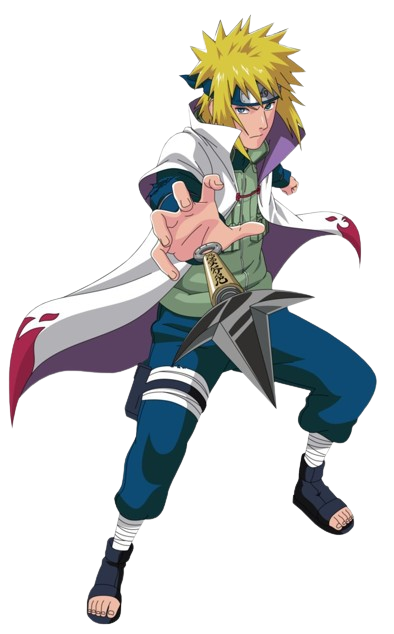

Minato namikaze
Yondaime Hokage

- Biodata Minato namikaze
- Latar belakang
- Kemampuan yang dimiliki oleh minato namikaze
- Chakra yang sangat besar: Hashirama memiliki jumlah chakra yang sangat besar, memungkinkan dia untuk melakukan jutsu-jutsu besar tanpa kelelahan.
- Regenerasi: Hashirama memiliki kemampuan regenerasi yang luar biasa, mempercepat proses penyembuhan tanpa perlu jutsu medis.
Minato Namikaze (波風ミナト, Namikaze Minato) yang juga dikenal sebagai Hokage Keempat (四代目火影, Yondaime Hokage) adalah tokoh fiktif dalam serial manga dan anime Naruto. Seorang ninja yang telah menyegel siluman rubah berekor sembilan ke dalam tubuh anaknya, Naruto Uzumaki. Setelah melakukan penyegelan dan meyakinkan penduduk agar tidak menganggap Naruto sebagai monster melainkan sebagai pahlawan, Minato meninggal akibat serangan kyuubi. Selain itu dia di juluki dengan ninja "si kilat kuning dari konoha". Minato digambarkan sangat mirip dengan anaknya, dan mereka memiliki sejumlah persamaan. Minato adalah murid dari Jiraiya. Minato juga merupakan guru dari Kakashi Hatake, Obito Uchiha, dan Rin Nohara. Minato Namikaze memiliki seorang istri bernama Kushina Uzumaki. Nama lengkap Naruto mengikuti nama klan ibunya, yaitu Uzumaki.
Biodata Minaato namikaze
Nama: Minato namikaze
Julukan: Yondaime Hokage,Konoha no Kiiroi Senkō
Tanggal Lahir: 25 Januari
Klan: Tidak diketahui secara spesifik
Afiliasi: Desa Konoha
Status: Almarhum (meninggal saat serangan Kyuubi untuk melindungi desa), dihidupkan kembali sementara oleh Edo Tensei
Gender: Laki-laki
Kekkei Genkai: Tidak ada kekkei genkai yang diketahui
Ketika Minato di Akademi, teman sekelasnya dan masa mendatang menjadi istrinya, Uzumaki Kushina berpikir bahwa sikap Minato tidak tetap, tidak gagah dan tidak bisa diandalkan. Kushina menganggap Minato sama dengan orang lain yang merendahkan dan menertawakannya. Saat Kushina memperkenalkan diri di depan kelas, Kushina mengatakan bahwa ia memiliki impian menjadi Hokage perempuan pertama. Lalu Minato mengatakan bahwa ia juga memimpikan keberadaannya diakui oleh penduduk desa Konoha dengan menjadi Hokage, tetapi Kushina tidak menghiraukannya. Bertahun-tahun kemudian, ketika Kushina diculik oleh ninja Kumogakure, Minato adalah satu-satunya yang menyelamatkannya berdasarkan jejak yang Kushina tinggalkan berupa helaian rambut merahnya di sepanjang jalan. Setelah menyelamatkannya, Minato mengatakan bahwa ia selalu mengagumi rambut merah Kushina yang dianggap aneh oleh banyak orang, sehingga Minato adalah orang pertama yang memuji rambut tersebut. Dengan begitu, Kushina tidak lagi berpikir seperti anggapannya selama ini terhadap Minato, dan juga merasa bahwa Minato menolongnya dari kesendirian. Mulai saat itu Kushina jatuh cinta kepada Minato. Menurut mereka yang mengenalnya secara pribadi, Minato adalah seorang anak ajaib yang sangat berbakat. Ia adalah ninja jenius yang langka. Ia lulus dari Akademi pada usia sepuluh tahun, dan ditambahkan ke tim Genin di bawah pengawasan Jiraiya. Jiraiya berminat melatih Minato dan menerima dia sebagai murid, jurus yang diajarkan Jiraiya antara lain mengajarkannya jurus pemanggilan hewan. Ia bahkan percaya Minato mungkin seorang anak dalam ramalan tetua katak yang suatu hari nanti akan menyelamatkan dunia. Namun, Minato memercayakan peran tersebut kepada anaknya, Naruto.
Jutsu yang Dimiliki Minato Namikaze
- Hiraishin no Jutsu (Flying Thunder God Technique):
- Rasengan
- Shiki Fūjin (Dead Demon Consuming Seal): Teknik penyegelan yang sangat kuat yang memanggil roh kematian untuk menyegel jiwa target, dengan mengorbankan nyawa pengguna. Minato menggunakan teknik ini untuk menyegel separuh dari Kyuubi ke dalam tubuhnya dan separuh lainnya ke dalam tubuh Naruto.
- Hiraishin: Dorai:
- Hakke no Fūin Shiki
- Teknik teleportasi yang memungkinkan Minato berpindah tempat secara instan ke lokasi yang telah ditandai dengan segel khusus.

- eknik bola chakra yang kuat yang diciptakan oleh Minato. Teknik ini tidak memerlukan segel tangan dan sangat destruktif.


Teknik teleportasi tingkat tinggi yang memungkinkan Minato bertukar tempat dengan benda atau orang lain yang memiliki segel Hiraishin.

Teknik penyegelan yang digunakan untuk menyegel separuh dari Kyuubi ke dalam tubuh Naruto.